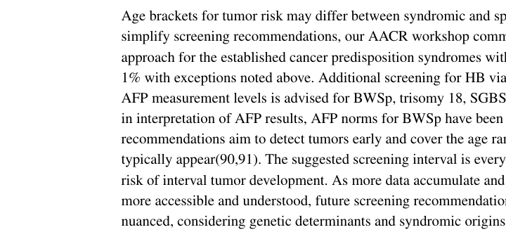

Beckwith-Wiedemann syndrome (BWS), increasingly framed as the Beckwith-Wiedemann spectrum (BWSp), is a congenital overgrowth and childhood cancer-predisposition imprinting disorder caused by genetic and/or epigenetic dysregulation of imprinted growth genes at chromosome 11p15.5. Dysregulation of the two imprinting control regions IC1 (H19/IGF2:IG-DMR) and IC2 (KCNQ1OT1:TSS-DMR) alters dosage of the growth promoter IGF2 and the growth suppressor CDKN1C, producing macroglossia, abdominal wall defects (omphalocele/umbilical hernia), lateralized overgrowth (hemihyperplasia), neonatal hyperinsulinism/hypoglycemia, organomegaly, and an increased risk of embryonal tumors, particularly Wilms tumor and hepatoblastoma. Many cases are mosaic, and the four principal molecular classes are IC2 loss of methylation, paternal uniparental disomy of 11p15, IC1 gain of methylation, and maternal CDKN1C loss-of-function variants.
Ask a research question about Beckwith-Wiedemann Syndrome. OpenScientist will conduct autonomous deep research using the Disorder Mechanisms Knowledge Base and PubMed literature (typically 10-30 minutes).
Do not include personal health information in your question. Questions and results are cached in your browser's local storage.
name: Beckwith-Wiedemann Syndrome
creation_date: "2026-06-03T00:00:00Z"
category: Mendelian
description: >-
Beckwith-Wiedemann syndrome (BWS), increasingly framed as the
Beckwith-Wiedemann spectrum (BWSp), is a congenital overgrowth and childhood
cancer-predisposition imprinting disorder caused by genetic and/or epigenetic
dysregulation of imprinted growth genes at chromosome 11p15.5. Dysregulation
of the two imprinting control regions IC1 (H19/IGF2:IG-DMR) and IC2
(KCNQ1OT1:TSS-DMR) alters dosage of the growth promoter IGF2 and the growth
suppressor CDKN1C, producing macroglossia, abdominal wall defects
(omphalocele/umbilical hernia), lateralized overgrowth (hemihyperplasia),
neonatal hyperinsulinism/hypoglycemia, organomegaly, and an increased risk of
embryonal tumors, particularly Wilms tumor and hepatoblastoma. Many cases are
mosaic, and the four principal molecular classes are IC2 loss of methylation,
paternal uniparental disomy of 11p15, IC1 gain of methylation, and maternal
CDKN1C loss-of-function variants.
disease_term:
preferred_term: Beckwith-Wiedemann syndrome
term:
id: MONDO:0007534
label: Beckwith-Wiedemann syndrome
parents:
- Genomic Imprinting Disorders
- Overgrowth Disorders
synonyms:
- BWS
- Beckwith-Wiedemann spectrum
- BWSp
- Wiedemann-Beckwith syndrome
- exomphalos-macroglossia-gigantism syndrome
references:
- reference: PMID:20301568
title: "Beckwith-Wiedemann Syndrome."
tags:
- GeneReviews
has_subtypes:
- name: IC2 LoM
display_name: IC2 loss of methylation (KCNQ1OT1:TSS-DMR hypomethylation)
classification: molecular
subtype_frequency: ~50%
description: >-
The most common molecular subtype. Loss of methylation at the maternal IC2
(KCNQ1OT1:TSS-DMR) permits biallelic KCNQ1OT1 expression and reduced CDKN1C
expression. Associated with classic BWSp features and the lowest overall
tumor risk (~2.6%), with hepatoblastoma being the predominant tumor.
evidence:
- reference: PMID:27419809
reference_title: "Phenotype, cancer risk, and surveillance in Beckwith-Wiedemann syndrome depending on molecular genetic subgroups."
supports: SUPPORT
evidence_source: HUMAN_CLINICAL
snippet: "Tumor risks were highest in the IC1 (H19/IGF2:IG-DMR) hypermethylation subgroup (28%) and pUPD subgroup (16%) and were lower in the KCNQ1OT1:TSS-DMR (IC2) subgroup (2.6%), CDKN1C (6.9%) subgroup, and the group in whom no molecular defect was detectable (6.7%)."
explanation: Identifies the IC2 (KCNQ1OT1:TSS-DMR) subgroup as the lower-risk molecular subgroup with a 2.6% tumor risk.
- name: pUPD11
display_name: Paternal uniparental disomy of chromosome 11p15
classification: molecular
subtype_frequency: ~20%
description: >-
Paternalization of both 11p15 imprinting domains causes IGF2 overexpression
with reduced expression of H19 and CDKN1C. Usually mosaic, with an
intermediate-to-high tumor risk (~16%) including both Wilms tumor and
hepatoblastoma.
evidence:
- reference: PMID:27419809
reference_title: "Phenotype, cancer risk, and surveillance in Beckwith-Wiedemann syndrome depending on molecular genetic subgroups."
supports: SUPPORT
evidence_source: HUMAN_CLINICAL
snippet: "Tumor risks were highest in the IC1 (H19/IGF2:IG-DMR) hypermethylation subgroup (28%) and pUPD subgroup (16%) and were lower in the KCNQ1OT1:TSS-DMR (IC2) subgroup (2.6%), CDKN1C (6.9%) subgroup, and the group in whom no molecular defect was detectable (6.7%)."
explanation: Quantifies the pUPD subgroup tumor risk at 16%, intermediate between IC1 and IC2.
- name: IC1 GoM
display_name: IC1 gain of methylation (H19/IGF2:IG-DMR hypermethylation)
classification: molecular
subtype_frequency: ~5-10%
description: >-
Gain of methylation at the IC1 (H19/IGF2:IG-DMR) imprinting control region
causes increased IGF2 expression and reduced H19. Carries the highest
overall tumor risk (~28%), strongly linked to Wilms tumor predisposition.
evidence:
- reference: PMID:27419809
reference_title: "Phenotype, cancer risk, and surveillance in Beckwith-Wiedemann syndrome depending on molecular genetic subgroups."
supports: SUPPORT
evidence_source: HUMAN_CLINICAL
snippet: "Wilms tumors (median age 24 months) were frequent in the IC1 (24%) and pUPD (7.9%) subgroups."
explanation: Establishes IC1 (H19/IGF2:IG-DMR) hypermethylation as the subgroup with the highest Wilms tumor frequency (24%).
- name: CDKN1C
display_name: Maternal CDKN1C loss-of-function variant
classification: molecular
subtype_frequency: ~5-10%
description: >-
Loss-of-function variants in the maternally expressed cell-cycle inhibitor
CDKN1C. Because the paternal allele is normally silenced, pathogenicity
depends on maternal transmission. This subtype is the most common cause of
familial BWS and carries a lower Wilms tumor/hepatoblastoma burden, with an
increased neuroblastoma risk.
evidence:
- reference: PMID:27419809
reference_title: "Phenotype, cancer risk, and surveillance in Beckwith-Wiedemann syndrome depending on molecular genetic subgroups."
supports: SUPPORT
evidence_source: HUMAN_CLINICAL
snippet: "In the CDKN1C subgroup 2.8% of patients developed neuroblastoma."
explanation: Documents the distinct tumor profile of the CDKN1C subgroup, with neuroblastoma rather than the Wilms tumor/hepatoblastoma seen in IC1/pUPD.
inheritance:
- name: Predominantly sporadic with parent-of-origin mechanisms
parent_of_origin_effect: >-
Because 11p15.5 genes are imprinted, the disease consequence of an
alteration depends on the parental origin: maternal IC2 loss of methylation,
paternal uniparental disomy, IC1 gain of methylation, and maternally
inherited CDKN1C loss-of-function variants each act through parent-of-origin
dosage imbalance.
description: >-
Most BWS arises sporadically through epimutations or mosaic uniparental
disomy. Heritable cases occur most often with maternal CDKN1C pathogenic
variants and certain 11p15 structural rearrangements, so recurrence-risk
counseling requires identifying the underlying molecular mechanism.
evidence:
- reference: PMID:35804856
reference_title: "Molecular Basis of Beckwith-Wiedemann Syndrome Spectrum with Associated Tumors and Consequences for Clinical Practice."
supports: SUPPORT
evidence_source: HUMAN_CLINICAL
snippet: "The molecular diagnosis of BWSp can be challenging for several reasons, including the range of causative molecular mechanisms which are frequently mosaic."
explanation: Supports the mosaic, molecularly heterogeneous nature of BWS that underlies its largely sporadic occurrence.
prevalence:
- population: General population (live births)
notes: >-
Reviews cite a birth prevalence of approximately 1 in 10,000 to 1 in 13,700
live births, though ascertainment is incomplete because mild and mosaic
presentations are under-recognized.
evidence:
- reference: PMID:35804856
reference_title: "Molecular Basis of Beckwith-Wiedemann Syndrome Spectrum with Associated Tumors and Consequences for Clinical Practice."
supports: PARTIAL
evidence_source: HUMAN_CLINICAL
snippet: "Beckwith-Wiedemann syndrome (BWS, OMIM 130650) is a congenital imprinting condition with a heterogenous clinical presentation of overgrowth and an increased childhood cancer risk (mainly nephroblastoma, hepatoblastoma or neuroblastoma)."
explanation: Supports BWS as a congenital imprinting condition; the specific birth-prevalence figures come from the Falcon-summarized reviews rather than this abstract, so support is partial.
pathophysiology:
- name: 11p15.5 Imprinting Dysregulation
description: >-
The initiating lesion in BWS is a genetic or epigenetic alteration of the
imprinted 11p15.5 domain (IC1 gain of methylation, IC2 loss of methylation,
paternal uniparental disomy, copy-number variants, or CDKN1C variants) that
disrupts parent-of-origin regulation of the growth promoter IGF2 and the
growth suppressor CDKN1C.
biological_processes:
- preferred_term: genomic imprinting
term:
id: GO:0071514
label: genomic imprinting
- preferred_term: regulation of gene expression
term:
id: GO:0010468
label: regulation of gene expression
genes:
- preferred_term: IGF2
term:
id: hgnc:5466
label: IGF2
- preferred_term: CDKN1C
term:
id: hgnc:1786
label: CDKN1C
- preferred_term: H19
term:
id: hgnc:4713
label: H19
- preferred_term: KCNQ1OT1
term:
id: hgnc:6295
label: KCNQ1OT1
evidence:
- reference: PMID:35804856
reference_title: "Molecular Basis of Beckwith-Wiedemann Syndrome Spectrum with Associated Tumors and Consequences for Clinical Practice."
supports: SUPPORT
evidence_source: HUMAN_CLINICAL
snippet: "The tumor risk of up to 30% depends on the molecular subtype of BWSp with causative genetic or epigenetic alterations in the chromosomal region 11p15.5."
explanation: Establishes 11p15.5 genetic/epigenetic alteration as the causal molecular basis of BWSp.
downstream:
- target: IGF2 Overexpression
description: IC1 gain of methylation and paternal UPD11 increase IGF2 dosage.
- target: CDKN1C Loss of Function
description: IC2 loss of methylation and CDKN1C variants reduce CDKN1C growth-suppressor activity.
- target: Omphalocele
causal_link_type: INDIRECT_KNOWN_INTERMEDIATES
intermediate_mechanisms:
- abnormal embryonic abdominal wall development
description: >-
11p15.5 imprinting dysregulation produces the congenital abdominal-wall
defect component of the BWS spectrum.
evidence:
- reference: PMID:20301568
reference_title: "Beckwith-Wiedemann Syndrome."
supports: SUPPORT
evidence_source: HUMAN_CLINICAL
snippet: "Beckwith-Wiedemann syndrome (BWS) is a growth disorder variably characterized by macroglossia, hemihyperplasia, omphalocele, neonatal hypoglycemia, macrosomia, embryonal tumors"
explanation: >-
GeneReviews lists omphalocele among the characterizing BWS features.
- target: Neonatal hypoglycemia
causal_link_type: INDIRECT_KNOWN_INTERMEDIATES
intermediate_mechanisms:
- neonatal insulin and glucose dysregulation
description: >-
Imprinting dysregulation in BWS can produce neonatal glucose instability.
evidence:
- reference: PMID:20301568
reference_title: "Beckwith-Wiedemann Syndrome."
supports: SUPPORT
evidence_source: HUMAN_CLINICAL
snippet: "Neonatal hypoglycemia occurs in approximately 50% of infants with BWS; most episodes are mild and transient."
explanation: >-
GeneReviews directly documents neonatal hypoglycemia in BWS.
- target: Hyperinsulinemic hypoglycemia
causal_link_type: INDIRECT_KNOWN_INTERMEDIATES
intermediate_mechanisms:
- pancreatic hyperinsulinism
description: >-
A subset of infants develop persistent hypoglycemia due to
hyperinsulinism.
evidence:
- reference: PMID:20301568
reference_title: "Beckwith-Wiedemann Syndrome."
supports: SUPPORT
evidence_source: HUMAN_CLINICAL
snippet: "in some cases, persistent hypoglycemia due to hyperinsulinism may require consultation with an endocrinologist for therapeutic intervention."
explanation: >-
GeneReviews directly supports hyperinsulinism as the mechanism for
persistent hypoglycemia in some infants with BWS.
- target: Posterior helical ear pits
causal_link_type: INDIRECT_KNOWN_INTERMEDIATES
intermediate_mechanisms:
- external ear developmental anomaly
description: >-
The imprinting disorder includes characteristic external-ear anomalies.
evidence:
- reference: PMID:20301568
reference_title: "Beckwith-Wiedemann Syndrome."
supports: SUPPORT
evidence_source: HUMAN_CLINICAL
snippet: "ear creases / posterior helical ear pits"
explanation: >-
GeneReviews lists posterior helical ear pits among the characterizing
BWS anomalies.
- name: IGF2 Overexpression
description: >-
IC1 gain of methylation and paternal uniparental disomy of 11p15 increase
expression of the paternally expressed insulin-like growth factor IGF2 (with
reduced H19), driving excessive fetal and tissue growth and contributing to
Wilms tumor predisposition.
biological_processes:
- preferred_term: insulin-like growth factor receptor signaling pathway
term:
id: GO:0048009
label: insulin-like growth factor receptor signaling pathway
- preferred_term: regulation of cell growth
term:
id: GO:0001558
label: regulation of cell growth
genes:
- preferred_term: IGF2
term:
id: hgnc:5466
label: IGF2
- preferred_term: H19
term:
id: hgnc:4713
label: H19
evidence:
- reference: PMID:27419809
reference_title: "Phenotype, cancer risk, and surveillance in Beckwith-Wiedemann syndrome depending on molecular genetic subgroups."
supports: SUPPORT
evidence_source: HUMAN_CLINICAL
snippet: "Tumor risks were highest in the IC1 (H19/IGF2:IG-DMR) hypermethylation subgroup (28%) and pUPD subgroup (16%)"
explanation: Links IC1 (H19/IGF2) hypermethylation and pUPD, the IGF2-overexpressing subtypes, to the highest tumor risk.
downstream:
- target: Overgrowth and Embryonal Tumor Predisposition
description: Increased IGF2 growth signaling promotes overgrowth and embryonal tumor risk.
- name: CDKN1C Loss of Function
description: >-
IC2 loss of methylation permits biallelic KCNQ1OT1 expression and reduces
expression of the maternally expressed cyclin-dependent kinase inhibitor
CDKN1C; maternal CDKN1C loss-of-function variants have the same effect. Loss
of this growth brake removes negative regulation of cell proliferation.
cell_types:
- preferred_term: hepatoblast
term:
id: CL:0005026
label: hepatoblast
biological_processes:
- preferred_term: regulation of cell cycle
term:
id: GO:0051726
label: regulation of cell cycle
- preferred_term: negative regulation of cell population proliferation
term:
id: GO:0008285
label: negative regulation of cell population proliferation
genes:
- preferred_term: CDKN1C
term:
id: hgnc:1786
label: CDKN1C
- preferred_term: KCNQ1OT1
term:
id: hgnc:6295
label: KCNQ1OT1
evidence:
- reference: PMID:27419809
reference_title: "Phenotype, cancer risk, and surveillance in Beckwith-Wiedemann syndrome depending on molecular genetic subgroups."
supports: SUPPORT
evidence_source: HUMAN_CLINICAL
snippet: "Hepatoblastoma occurred mostly in the pUPD (3.5%) and IC2 (0.7%) subgroups, never in the IC1 and CDKN1C subgroups, and always before 30 months of age."
explanation: Associates the CDKN1C-loss subtypes (IC2 LOM and CDKN1C variants) with their distinct tumor distribution, supporting CDKN1C as the relevant growth-suppressor axis.
downstream:
- target: Overgrowth and Embryonal Tumor Predisposition
description: Loss of CDKN1C growth suppression contributes to overgrowth and tumor predisposition.
- name: Overgrowth and Embryonal Tumor Predisposition
description: >-
Combined IGF2 excess and CDKN1C loss promote increased proliferation and a
proposed stalling of cellular differentiation in developing organs,
predisposing persisting embryonic cells to accumulate additional defects and
develop embryonal tumors (notably Wilms tumor and hepatoblastoma, in which
cooperating Wnt/CTNNB1 activation is frequent).
cell_types:
- preferred_term: metanephric mesenchyme stem cell
term:
id: CL:0000324
label: metanephric mesenchyme stem cell
- preferred_term: hepatoblast
term:
id: CL:0005026
label: hepatoblast
biological_processes:
- preferred_term: negative regulation of cell population proliferation
term:
id: GO:0008285
label: negative regulation of cell population proliferation
- preferred_term: Wnt signaling pathway
term:
id: GO:0016055
label: Wnt signaling pathway
evidence:
- reference: PMID:35804856
reference_title: "Molecular Basis of Beckwith-Wiedemann Syndrome Spectrum with Associated Tumors and Consequences for Clinical Practice."
supports: SUPPORT
evidence_source: HUMAN_CLINICAL
snippet: "The molecular basis of tumor formation appears to relate to stalled cellular differentiation in certain organs that predisposes persisting embryonic cells to accumulate additional molecular defects, which then results in a range of embryonal tumors."
explanation: Directly supports the proposed mechanism linking 11p15.5 dysregulation to embryonal tumor formation via stalled differentiation.
- reference: PMID:37174013
reference_title: "Occurrence of Hepatoblastomas in Patients with Beckwith-Wiedemann Spectrum (BWSp)."
supports: SUPPORT
evidence_source: HUMAN_CLINICAL
snippet: "We found that 100% of the HBs that underwent NGS panel testing had variants in the CTNNB1 gene."
explanation: Supports cooperating Wnt/CTNNB1 (beta-catenin) activation as a frequent second hit in BWS-associated hepatoblastoma.
- reference: PMID:38142265
reference_title: "Cancer predisposition signaling in Beckwith-Wiedemann Syndrome drives Wilms tumor development."
supports: SUPPORT
evidence_source: HUMAN_CLINICAL
snippet: "CTNNB1 overexpression and broad range of interactions were seen in the BWS-WT interactome study."
explanation: Supports CTNNB1/Wnt signaling involvement in BWS-associated Wilms tumor development.
downstream:
- target: Macroglossia
causal_link_type: DIRECT
description: >-
Overgrowth signaling produces enlargement of the tongue, a cardinal BWS
overgrowth feature.
evidence:
- reference: PMID:20301568
reference_title: "Beckwith-Wiedemann Syndrome."
supports: SUPPORT
evidence_source: HUMAN_CLINICAL
snippet: "Macroglossia is generally present at birth and can obstruct breathing or interfere with feeding in infants."
explanation: >-
GeneReviews directly documents congenital macroglossia in BWS.
- target: Hemihyperplasia
causal_link_type: DIRECT
description: >-
Mosaic overgrowth produces lateralized tissue enlargement.
evidence:
- reference: PMID:20301568
reference_title: "Beckwith-Wiedemann Syndrome."
supports: SUPPORT
evidence_source: HUMAN_CLINICAL
snippet: "Beckwith-Wiedemann syndrome (BWS) is a growth disorder variably characterized by macroglossia, hemihyperplasia, omphalocele, neonatal hypoglycemia, macrosomia, embryonal tumors"
explanation: >-
GeneReviews lists hemihyperplasia among the variable characterizing
features of BWS.
- target: Macrosomia
causal_link_type: DIRECT
description: >-
Excess growth signaling produces prenatal and postnatal overgrowth.
evidence:
- reference: PMID:20301568
reference_title: "Beckwith-Wiedemann Syndrome."
supports: SUPPORT
evidence_source: HUMAN_CLINICAL
snippet: "Beckwith-Wiedemann syndrome (BWS) is a growth disorder variably characterized by macroglossia, hemihyperplasia, omphalocele, neonatal hypoglycemia, macrosomia, embryonal tumors"
explanation: >-
GeneReviews lists macrosomia among the variable characterizing features
of BWS.
- target: Visceromegaly
causal_link_type: DIRECT
description: Organ overgrowth produces visceromegaly in the BWS spectrum.
evidence:
- reference: PMID:20301568
reference_title: "Beckwith-Wiedemann Syndrome."
supports: SUPPORT
evidence_source: HUMAN_CLINICAL
snippet: "embryonal tumors (e.g., Wilms tumor, hepatoblastoma, neuroblastoma, and rhabdomyosarcoma), visceromegaly, adrenocortical cytomegaly"
explanation: >-
GeneReviews lists visceromegaly among characterizing BWS features.
- target: Nephroblastoma (Wilms tumor)
causal_link_type: INDIRECT_KNOWN_INTERMEDIATES
intermediate_mechanisms:
- embryonal renal tumor predisposition
description: >-
Stalled differentiation and additional oncogenic defects in developing
kidney tissue predispose to Wilms tumor.
evidence:
- reference: PMID:27419809
reference_title: "Phenotype, cancer risk, and surveillance in Beckwith-Wiedemann syndrome depending on molecular genetic subgroups."
supports: SUPPORT
evidence_source: HUMAN_CLINICAL
snippet: "Wilms tumors (median age 24 months) were frequent in the IC1 (24%) and pUPD (7.9%) subgroups."
explanation: >-
The molecular subgroup study directly supports Wilms tumor as a BWS
embryonal tumor, especially in IC1 and pUPD.
- target: Hepatoblastoma
causal_link_type: INDIRECT_KNOWN_INTERMEDIATES
intermediate_mechanisms:
- embryonal hepatic tumor predisposition
description: >-
Stalled differentiation and cooperating pathway alterations in developing
liver tissue predispose to hepatoblastoma.
evidence:
- reference: PMID:27419809
reference_title: "Phenotype, cancer risk, and surveillance in Beckwith-Wiedemann syndrome depending on molecular genetic subgroups."
supports: SUPPORT
evidence_source: HUMAN_CLINICAL
snippet: "Hepatoblastoma occurred mostly in the pUPD (3.5%) and IC2 (0.7%) subgroups, never in the IC1 and CDKN1C subgroups, and always before 30 months of age."
explanation: >-
The molecular subgroup study directly supports hepatoblastoma as a BWS
embryonal tumor with subgroup-dependent occurrence.
- target: Neuroblastoma
causal_link_type: INDIRECT_KNOWN_INTERMEDIATES
intermediate_mechanisms:
- embryonal neural-crest tumor predisposition
description: >-
BWS embryonal tumor predisposition includes neuroblastoma in a subset of
molecular subgroups.
evidence:
- reference: PMID:27419809
reference_title: "Phenotype, cancer risk, and surveillance in Beckwith-Wiedemann syndrome depending on molecular genetic subgroups."
supports: SUPPORT
evidence_source: HUMAN_CLINICAL
snippet: "In the CDKN1C subgroup 2.8% of patients developed neuroblastoma."
explanation: >-
The subgroup study directly documents neuroblastoma in the CDKN1C BWS
subgroup.
- target: Rhabdomyosarcoma
causal_link_type: INDIRECT_KNOWN_INTERMEDIATES
intermediate_mechanisms:
- embryonal skeletal-muscle tumor predisposition
description: >-
BWS embryonal tumor predisposition includes rhabdomyosarcoma, though it is
less common than Wilms tumor or hepatoblastoma.
evidence:
- reference: PMID:20301568
reference_title: "Beckwith-Wiedemann Syndrome."
supports: SUPPORT
evidence_source: HUMAN_CLINICAL
snippet: "embryonal tumors (e.g., Wilms tumor, hepatoblastoma, neuroblastoma, and rhabdomyosarcoma)"
explanation: >-
GeneReviews lists rhabdomyosarcoma among the embryonal tumors reported
in BWS.
phenotypes:
- name: Macroglossia
description: Enlarged tongue is a cardinal feature, observed in roughly 90% of BWSp patients, and may obstruct breathing or feeding.
phenotype_term:
preferred_term: Macroglossia
term:
id: HP:0000158
label: Macroglossia
evidence:
- reference: PMID:20301568
reference_title: "Beckwith-Wiedemann Syndrome."
supports: SUPPORT
evidence_source: HUMAN_CLINICAL
snippet: "Macroglossia is generally present at birth and can obstruct breathing or interfere with feeding in infants."
explanation: The GeneReviews abstract documents macroglossia as a congenital cardinal feature of BWS.
- name: Omphalocele
description: Abdominal wall defect (exomphalos) is one of the classic triad features of BWS.
phenotype_term:
preferred_term: Omphalocele
term:
id: HP:0001539
label: Omphalocele
evidence:
- reference: PMID:20301568
reference_title: "Beckwith-Wiedemann Syndrome."
supports: SUPPORT
evidence_source: HUMAN_CLINICAL
snippet: "Beckwith-Wiedemann syndrome (BWS) is a growth disorder variably characterized by macroglossia, hemihyperplasia, omphalocele, neonatal hypoglycemia, macrosomia, embryonal tumors"
explanation: The GeneReviews abstract lists omphalocele among the characterizing features of BWS.
- name: Umbilical hernia
description: Umbilical hernia and diastasis recti are common abdominal wall manifestations, including in lateralized-overgrowth cohorts.
phenotype_term:
preferred_term: Umbilical hernia
term:
id: HP:0001537
label: Umbilical hernia
evidence:
- reference: PMID:36980758
reference_title: "Investigation of 11p15.5 Methylation Defects Associated with Beckwith-Wiedemann Spectrum and Embryonic Tumor Risk in Lateralized Overgrowth Patients."
supports: PARTIAL
evidence_source: HUMAN_CLINICAL
snippet: "The aim of this study is to investigate epigenetic alterations in 11p15.5 and tumor risk in 87 children with LO."
explanation: From the lateralized-overgrowth BWSp cohort in which umbilical hernia/diastasis recti was among reported features (16%); abstract supports the cohort context, so support is partial.
- name: Hemihyperplasia
description: Lateralized overgrowth (hemihyperplasia/hemihypertrophy) may affect segmental regions, organs, or one side of the body and is often appreciated at birth.
phenotype_term:
preferred_term: Lateralized overgrowth (hemihyperplasia)
term:
id: HP:0001528
label: Hemihypertrophy
evidence:
- reference: PMID:36980758
reference_title: "Investigation of 11p15.5 Methylation Defects Associated with Beckwith-Wiedemann Spectrum and Embryonic Tumor Risk in Lateralized Overgrowth Patients."
supports: SUPPORT
evidence_source: HUMAN_CLINICAL
snippet: "The risk for embryonal tumors is high, especially in patients with lateralized overgrowth (LO)."
explanation: Supports lateralized overgrowth (hemihyperplasia) as a core BWSp feature with associated tumor risk.
- name: Macrosomia
description: Prenatal and postnatal overgrowth (macrosomia, large for gestational age) is characteristic; growth typically slows by age 7-8 years.
phenotype_term:
preferred_term: Macrosomia (large for gestational age)
term:
id: HP:0001520
label: Large for gestational age
evidence:
- reference: PMID:20301568
reference_title: "Beckwith-Wiedemann Syndrome."
supports: SUPPORT
evidence_source: HUMAN_CLINICAL
snippet: "Beckwith-Wiedemann syndrome (BWS) is a growth disorder variably characterized by macroglossia, hemihyperplasia, omphalocele, neonatal hypoglycemia, macrosomia, embryonal tumors"
explanation: The GeneReviews abstract lists macrosomia among the characterizing growth features of BWS.
- name: Neonatal hypoglycemia
description: Neonatal hypoglycemia occurs in approximately 50% of infants; most episodes are mild and transient, but persistent hyperinsulinism may require intervention.
phenotype_term:
preferred_term: Neonatal hypoglycemia
term:
id: HP:0001998
label: Neonatal hypoglycemia
frequency: FREQUENT
evidence:
- reference: PMID:20301568
reference_title: "Beckwith-Wiedemann Syndrome."
supports: SUPPORT
evidence_source: HUMAN_CLINICAL
snippet: "Neonatal hypoglycemia occurs in approximately 50% of infants with BWS; most episodes are mild and transient."
explanation: The GeneReviews abstract documents neonatal hypoglycemia in ~50% of BWS infants, supporting both the phenotype and the FREQUENT band (30-79%).
- name: Hyperinsulinemic hypoglycemia
description: A subset of infants have persistent hypoglycemia due to hyperinsulinism requiring endocrinologic management.
phenotype_term:
preferred_term: Hyperinsulinemic hypoglycemia
term:
id: HP:0000825
label: Hyperinsulinemic hypoglycemia
evidence:
- reference: PMID:20301568
reference_title: "Beckwith-Wiedemann Syndrome."
supports: SUPPORT
evidence_source: HUMAN_CLINICAL
snippet: "in some cases, persistent hypoglycemia due to hyperinsulinism may require consultation with an endocrinologist for therapeutic intervention."
explanation: The GeneReviews abstract documents persistent hyperinsulinism-driven hypoglycemia in some BWS infants.
- name: Posterior helical ear pits
description: Posterior helical ear pits and anterior ear-lobe creases are characteristic minor anomalies of BWS.
phenotype_term:
preferred_term: Posterior helical ear pits
term:
id: HP:0008523
label: Posterior helix pit
evidence:
- reference: PMID:20301568
reference_title: "Beckwith-Wiedemann Syndrome."
supports: SUPPORT
evidence_source: HUMAN_CLINICAL
snippet: "ear creases / posterior helical ear pits"
explanation: The GeneReviews abstract lists posterior helical ear pits among the characterizing features of BWS.
- name: Visceromegaly
description: Organomegaly/visceromegaly (e.g., nephromegaly, hepatomegaly) is a recognized BWS feature.
phenotype_term:
preferred_term: Visceromegaly
term:
id: HP:0003271
label: Visceromegaly
evidence:
- reference: PMID:20301568
reference_title: "Beckwith-Wiedemann Syndrome."
supports: SUPPORT
evidence_source: HUMAN_CLINICAL
snippet: "embryonal tumors (e.g., Wilms tumor, hepatoblastoma, neuroblastoma, and rhabdomyosarcoma), visceromegaly, adrenocortical cytomegaly"
explanation: The GeneReviews abstract lists visceromegaly among the characterizing features of BWS.
- name: Nephroblastoma (Wilms tumor)
category: Neoplasm
description: >-
Wilms tumor is a cardinal embryonal tumor of BWS, most frequent in the IC1
and pUPD subgroups (median age at diagnosis ~24 months), with risk
concentrated in the first seven years of life.
phenotype_term:
preferred_term: Nephroblastoma (Wilms tumor)
term:
id: HP:0002667
label: Nephroblastoma
evidence:
- reference: PMID:27419809
reference_title: "Phenotype, cancer risk, and surveillance in Beckwith-Wiedemann syndrome depending on molecular genetic subgroups."
supports: SUPPORT
evidence_source: HUMAN_CLINICAL
snippet: "Wilms tumors (median age 24 months) were frequent in the IC1 (24%) and pUPD (7.9%) subgroups."
explanation: Directly supports Wilms tumor (nephroblastoma) as a frequent BWS tumor with subgroup-dependent frequency and a median diagnosis age of 24 months.
- name: Hepatoblastoma
category: Neoplasm
description: >-
Hepatoblastoma is a cardinal embryonal liver tumor of BWS, occurring mostly
in the pUPD and IC2 subgroups and almost always before 30 months of age;
cooperating CTNNB1 (Wnt/beta-catenin) variants are essentially universal.
phenotype_term:
preferred_term: Hepatoblastoma
term:
id: HP:0002884
label: Hepatoblastoma
evidence:
- reference: PMID:27419809
reference_title: "Phenotype, cancer risk, and surveillance in Beckwith-Wiedemann syndrome depending on molecular genetic subgroups."
supports: SUPPORT
evidence_source: HUMAN_CLINICAL
snippet: "Hepatoblastoma occurred mostly in the pUPD (3.5%) and IC2 (0.7%) subgroups, never in the IC1 and CDKN1C subgroups, and always before 30 months of age."
explanation: Directly supports hepatoblastoma as a BWS tumor with subgroup-dependent frequency and onset before 30 months.
- reference: PMID:37174013
reference_title: "Occurrence of Hepatoblastomas in Patients with Beckwith-Wiedemann Spectrum (BWSp)."
supports: SUPPORT
evidence_source: HUMAN_CLINICAL
snippet: "Patients with Beckwith-Wiedemann syndrome (BWS), an epigenetic imprinting disorder involving alterations in genes at the 11p15 chromosomal location, are predisposed to develop hepatoblastomas (HBs), which are rare embryonal liver tumors."
explanation: Confirms BWS predisposition to hepatoblastoma as embryonal liver tumors.
- name: Neuroblastoma
category: Neoplasm
description: Neuroblastoma is a less common BWS embryonal tumor, relatively enriched in the CDKN1C subgroup.
phenotype_term:
preferred_term: Neuroblastoma
term:
id: HP:0003006
label: Neuroblastoma
evidence:
- reference: PMID:27419809
reference_title: "Phenotype, cancer risk, and surveillance in Beckwith-Wiedemann syndrome depending on molecular genetic subgroups."
supports: SUPPORT
evidence_source: HUMAN_CLINICAL
snippet: "In the CDKN1C subgroup 2.8% of patients developed neuroblastoma."
explanation: Supports neuroblastoma as a BWS tumor enriched in the CDKN1C molecular subgroup.
- name: Rhabdomyosarcoma
category: Neoplasm
description: Rhabdomyosarcoma is among the embryonal tumors reported in BWS, though uncommon.
phenotype_term:
preferred_term: Rhabdomyosarcoma
term:
id: HP:0002859
label: Rhabdomyosarcoma
evidence:
- reference: PMID:20301568
reference_title: "Beckwith-Wiedemann Syndrome."
supports: SUPPORT
evidence_source: HUMAN_CLINICAL
snippet: "embryonal tumors (e.g., Wilms tumor, hepatoblastoma, neuroblastoma, and rhabdomyosarcoma)"
explanation: The GeneReviews abstract lists rhabdomyosarcoma among the embryonal tumors of BWS.
genetic:
- name: IGF2
subtype: IC1 GoM
gene_term:
preferred_term: IGF2
term:
id: hgnc:5466
label: IGF2
presence: Positive
association: Imprinted growth promoter overexpressed in IC1 GoM and pUPD11
features: >-
IGF2 is the paternally expressed insulin-like growth factor at 11p15.5.
IC1 gain of methylation and paternal UPD11 increase IGF2 dosage, driving
overgrowth and Wilms tumor predisposition.
evidence:
- reference: PMID:27419809
reference_title: "Phenotype, cancer risk, and surveillance in Beckwith-Wiedemann syndrome depending on molecular genetic subgroups."
supports: SUPPORT
evidence_source: HUMAN_CLINICAL
snippet: "Tumor risks were highest in the IC1 (H19/IGF2:IG-DMR) hypermethylation subgroup (28%) and pUPD subgroup (16%)"
explanation: Links the IGF2-affecting IC1 (H19/IGF2:IG-DMR) hypermethylation subgroup to the highest tumor risk.
- name: CDKN1C
subtype: CDKN1C
gene_term:
preferred_term: CDKN1C
term:
id: hgnc:1786
label: CDKN1C
presence: Positive
association: Maternally expressed growth suppressor; loss-of-function variants cause BWS
features: >-
CDKN1C is the maternally expressed cyclin-dependent kinase inhibitor at
11p15.5. Maternal loss-of-function variants are the most common cause of
familial BWS and are reduced in expression by IC2 loss of methylation.
evidence:
- reference: PMID:27419809
reference_title: "Phenotype, cancer risk, and surveillance in Beckwith-Wiedemann syndrome depending on molecular genetic subgroups."
supports: SUPPORT
evidence_source: HUMAN_CLINICAL
snippet: "Tumor risks were highest in the IC1 (H19/IGF2:IG-DMR) hypermethylation subgroup (28%) and pUPD subgroup (16%) and were lower in the KCNQ1OT1:TSS-DMR (IC2) subgroup (2.6%), CDKN1C (6.9%) subgroup, and the group in whom no molecular defect was detectable (6.7%)."
explanation: Identifies CDKN1C as a recognized molecular subgroup of BWS with its own tumor-risk profile (6.9%).
- name: H19
subtype: IC1 GoM
gene_term:
preferred_term: H19
term:
id: hgnc:4713
label: H19
presence: Positive
association: Maternally expressed lncRNA within the IC1 imprinted region
features: >-
H19 is the maternally expressed long non-coding RNA of the H19/IGF2:IG-DMR
(IC1) region; IC1 gain of methylation reduces H19 and increases IGF2.
evidence:
- reference: PMID:27419809
reference_title: "Phenotype, cancer risk, and surveillance in Beckwith-Wiedemann syndrome depending on molecular genetic subgroups."
supports: SUPPORT
evidence_source: HUMAN_CLINICAL
snippet: "Tumor risks were highest in the IC1 (H19/IGF2:IG-DMR) hypermethylation subgroup (28%)"
explanation: Names the H19/IGF2:IG-DMR (IC1) region whose hypermethylation defines this BWS subgroup.
- name: KCNQ1OT1
subtype: IC2 LoM
gene_term:
preferred_term: KCNQ1OT1
term:
id: hgnc:6295
label: KCNQ1OT1
presence: Positive
association: Paternally expressed lncRNA; biallelic in IC2 loss of methylation
features: >-
KCNQ1OT1 is the imprinted long non-coding RNA of the KCNQ1OT1:TSS-DMR (IC2)
region. IC2 loss of methylation permits biallelic KCNQ1OT1 expression and
silences CDKN1C, the most common BWS molecular subtype.
evidence:
- reference: PMID:27419809
reference_title: "Phenotype, cancer risk, and surveillance in Beckwith-Wiedemann syndrome depending on molecular genetic subgroups."
supports: SUPPORT
evidence_source: HUMAN_CLINICAL
snippet: "the KCNQ1OT1:TSS-DMR (IC2) subgroup (2.6%)"
explanation: Names the KCNQ1OT1:TSS-DMR (IC2) subgroup, the lowest-tumor-risk BWS molecular subtype.
diagnosis:
- name: Clinical scoring plus 11p15.5 molecular testing
description: >-
BWSp uses a consensus clinical scoring system (2 points for cardinal
features, 1 point for suggestive features); a clinical diagnosis is made at
>=4 points and molecular testing is recommended at >=2 points. First-line
molecular testing assesses IC1/IC2 methylation and copy number (e.g.,
MS-MLPA), with UPD assessment and CDKN1C sequencing as indicated. Because
BWS is frequently mosaic, negative blood testing does not exclude the
diagnosis and testing of additional tissues may be required.
evidence:
- reference: PMID:35804856
reference_title: "Molecular Basis of Beckwith-Wiedemann Syndrome Spectrum with Associated Tumors and Consequences for Clinical Practice."
supports: SUPPORT
evidence_source: HUMAN_CLINICAL
snippet: "The molecular diagnosis of BWSp can be challenging for several reasons, including the range of causative molecular mechanisms which are frequently mosaic."
explanation: Supports the mosaicism-driven diagnostic challenge that requires combined clinical and multi-tissue molecular testing.
- reference: PMID:36980758
reference_title: "Investigation of 11p15.5 Methylation Defects Associated with Beckwith-Wiedemann Spectrum and Embryonic Tumor Risk in Lateralized Overgrowth Patients."
supports: SUPPORT
evidence_source: HUMAN_CLINICAL
snippet: "The molecular diagnosis rate was 81.2% for the atypical and classic phenotypes, and 10.9% for the ILO phenotype."
explanation: Quantifies the variable molecular diagnostic yield across the clinical spectrum, supporting the role of phenotype-guided testing.
treatments:
- name: Tumor surveillance (abdominal ultrasound and serum AFP)
description: >-
For most BWS molecular subtypes, tumor screening consists of abdominal
ultrasound (liver, adrenal glands, kidneys) every three months until age
four years, followed by kidney ultrasound every three months from age four
to seven years. Serum alpha-fetoprotein (AFP) is measured every three months
until age four years to screen for hepatoblastoma. The CDKN1C subgroup is an
exception in updated harmonized recommendations given its lower Wilms
tumor/hepatoblastoma burden.
treatment_term:
preferred_term: surveillance for malignancies
term:
id: MAXO:0001492
label: surveillance for malignancies
target_phenotypes:
- preferred_term: Nephroblastoma
term:
id: HP:0002667
label: Nephroblastoma
- preferred_term: Hepatoblastoma
term:
id: HP:0002884
label: Hepatoblastoma
evidence:
- reference: PMID:20301568
reference_title: "Beckwith-Wiedemann Syndrome."
supports: SUPPORT
evidence_source: HUMAN_CLINICAL
snippet: "For most BWS molecular subtypes, tumor screening consists of abdominal ultrasound with views of the liver, adrenal glands, and kidneys every three months until age four years followed by kidney ultrasound only every three months from age four to seven years. Serum alpha-fetoprotein (AFP) levels are performed every three months until age four years."
explanation: The GeneReviews abstract specifies the BWS tumor-surveillance protocol with abdominal/kidney ultrasound and serum AFP.
- reference: PMID:39320341
reference_title: "Update on Surveillance for Wilms Tumor and Hepatoblastoma in Beckwith-Wiedemann Syndrome and Other Predisposition Syndromes."
supports: SUPPORT
evidence_source: HUMAN_CLINICAL
snippet: "members of the American Association for Cancer Research Pediatric Cancer Working Group met to update those guidelines with a review of more recently published evidence and risk estimates"
explanation: Supports the existence of updated harmonized surveillance guidelines for Wilms tumor and hepatoblastoma in BWS.
- name: Hyperinsulinism management
description: >-
Neonatal hypoglycemia is treated with oral feeding when mild or glucose
supplementation; hyperinsulinism is treated with standard pharmacotherapy
per endocrinologist, and partial pancreatectomy may be considered in
persistent hypoglycemia unresponsive to medical treatment.
treatment_term:
preferred_term: Pharmacotherapy
term:
id: NCIT:C15986
label: Pharmacotherapy
therapeutic_agent:
- preferred_term: diazoxide
term:
id: CHEBI:4495
label: diazoxide
target_phenotypes:
- preferred_term: Hyperinsulinemic hypoglycemia
term:
id: HP:0000825
label: Hyperinsulinemic hypoglycemia
evidence:
- reference: PMID:20301568
reference_title: "Beckwith-Wiedemann Syndrome."
supports: SUPPORT
evidence_source: HUMAN_CLINICAL
snippet: "Hyperinsulinism is treated with standard pharmacotherapy per endocrinologist; partial pancreatectomy may be considered in those with persistent hypoglycemia who are unresponsive to pharmacologic treatment."
explanation: The GeneReviews abstract documents pharmacotherapy and partial pancreatectomy for BWS hyperinsulinism.
- name: Tongue reduction surgery
description: >-
Macroglossia causing airway obstruction or feeding difficulty may require
feeding and/or respiratory support, and tongue reduction surgery may be
considered for functional and other indications.
treatment_term:
preferred_term: Glossectomy
term:
id: NCIT:C51604
label: Glossectomy
target_phenotypes:
- preferred_term: Macroglossia
term:
id: HP:0000158
label: Macroglossia
evidence:
- reference: PMID:20301568
reference_title: "Beckwith-Wiedemann Syndrome."
supports: SUPPORT
evidence_source: HUMAN_CLINICAL
snippet: "Tongue reduction surgery may be considered for this and other indications."
explanation: The GeneReviews abstract documents tongue reduction surgery for BWS macroglossia.
- name: Omphalocele repair
description: Standard surgical treatment is recommended for omphalocele per pediatric surgeon.
treatment_term:
preferred_term: Surgical Procedure
term:
id: NCIT:C15329
label: Surgical Procedure
target_phenotypes:
- preferred_term: Omphalocele
term:
id: HP:0001539
label: Omphalocele
evidence:
- reference: PMID:20301568
reference_title: "Beckwith-Wiedemann Syndrome."
supports: SUPPORT
evidence_source: HUMAN_CLINICAL
snippet: "Standard treatment is recommended for omphalocele per pediatric surgeon."
explanation: The GeneReviews abstract documents standard surgical management of omphalocele in BWS.
- name: Genetic counseling
description: >-
Genetic counseling is essential because recurrence risk depends on the
molecular mechanism; maternal CDKN1C pathogenic variants and some 11p15 copy
number variants may carry a recurrence risk as high as 50%, whereas most
families have a recurrence risk under 1%.
treatment_term:
preferred_term: genetic counseling
term:
id: MAXO:0000079
label: genetic counseling
evidence:
- reference: PMID:20301568
reference_title: "Beckwith-Wiedemann Syndrome."
supports: SUPPORT
evidence_source: HUMAN_CLINICAL
snippet: "While the majority of families have a recurrence risk of less than 1%, certain underlying genetic mechanisms (e.g., CDKN1C pathogenic variants and copy number variants involving 11p15) may be associated with a recurrence risk as high as 50%"
explanation: The GeneReviews abstract documents mechanism-dependent recurrence risk, supporting the central role of genetic counseling.
clinical_trials:
- name: NCT05214742
phase: NOT_APPLICABLE
status: ENROLLING_BY_INVITATION
description: >-
Study deriving induced pluripotent stem cells from blood to model imprinting
disorders, including BWS, and study the consequences of epimutations on
imprinted gene networks.
evidence:
- reference: clinicaltrials:NCT05214742
reference_title: "Developing Derived Induced Pluripotent Stem Cells From Blood as a Model for the Study to Understand Imprinted Disorders"
supports: SUPPORT
evidence_source: HUMAN_CLINICAL
snippet: "Studying the consequences of these epimutations on the molecular signature of the imprinted gene network in these patients would provide a better understanding of the epigenetic mechanisms regulating fetal growth."
explanation: Supports this iPSC disease-modeling study as relevant to BWS imprinting mechanisms.
- name: NCT01842659
phase: NOT_APPLICABLE
status: UNKNOWN
description: >-
Prenatal screening study evaluating whether quantitative methylation index
measures in amniotic fluid match blood methylation patterns for 11p15
imprinting abnormalities implicated in BWS and Silver-Russell syndrome.
evidence:
- reference: clinicaltrials:NCT01842659
reference_title: "Prenatal Screening for Imprinting Anomalies Implicated in Beckwith Wiedemann and Silver Russell Syndromes"
supports: SUPPORT
evidence_source: HUMAN_CLINICAL
snippet: "Losses of imprinting are involved in various syndromes. Those occurring in the 11p15 region lead to Beckwith-Wiedemann and Silver-Russell Syndromes."
explanation: Supports relevance of 11p15 imprinting-anomaly screening to BWS.
datasets:
Beckwith–Wiedemann syndrome (BWS; increasingly framed as Beckwith–Wiedemann spectrum, BWSp) is a congenital overgrowth and childhood cancer predisposition condition caused by genetic and/or epigenetic dysregulation of imprinted growth genes on chromosome 11p15.5; many cases are mosaic, contributing to variable phenotype severity (kalish2024updateonsurveillance pages 3-5). The “spectrum” concept (BWSp) is used because heterogeneous molecular causes produce a broad range of presentations from classic BWS to atypical/mild presentations including isolated lateralized overgrowth (eggermann2022molecularbasisof pages 1-2, kalish2024updateonsurveillance pages 3-5).
Most information here is synthesized from aggregated disease-level resources (consensus updates/reviews and cohort studies) rather than individual EHRs, though some included studies are cohorts of clinically evaluated patients (kalish2024updateonsurveillance pages 3-5, maas2016phenotypecancerrisk pages 1-4, tuysuz2023investigationof11p15.5 pages 4-6).
BWSp is an imprinting disorder most often caused by alterations affecting two imprinting domains at 11p15.5: * IC1 (H19/IGF2:IG-DMR), regulating parent-of-origin expression of IGF2 (growth factor) and H19 (noncoding RNA) (maas2016phenotypecancerrisk pages 1-4, eggermann2022molecularbasisof pages 4-5). * IC2 (KCNQ1OT1:TSS-DMR), regulating KCNQ1OT1 (lncRNA) and the growth suppressor/tumor suppressor CDKN1C (papulino2020preclinicalandclinical pages 3-5, eggermann2022molecularbasisof pages 4-5).
Common causal molecular mechanisms and approximate frequencies reported in reviews include: * IC2 loss of methylation (IC2 LOM): ~50% (eggermann2022molecularbasisof pages 4-5, faria2023cdkn1cgeneina pages 37-40) * Paternal uniparental disomy/isodisomy of 11p15 (upd(11)pat / pUPD11): ~20% (eggermann2022molecularbasisof pages 4-5, faria2023cdkn1cgeneina pages 37-40) * IC1 gain of methylation (IC1 GOM): ~5–10% (faria2023cdkn1cgeneina pages 37-40, eggermann2022molecularbasisof pages 4-5) * Maternal CDKN1C pathogenic variants: ~5–10% (higher proportion in familial cases in some series; e.g., 40% of familial cases in one review) (faria2023cdkn1cgeneina pages 37-40, eggermann2022molecularbasisof pages 4-5) * 11p15 copy-number variants (CNVs): ~2.5% (eggermann2022molecularbasisof pages 4-5)
ART is repeatedly discussed as a possible risk factor for imprinting disorders, including BWS/BWSp, plausibly because ART procedures coincide with critical windows of epigenetic reprogramming (sciorio2025associationbetweenhuman pages 13-14, NCT00773825 chunk 1). Quantitative estimates summarized in a recent scoping review include: * Reported ~5.2-fold higher relative risk of BWS in ART-conceived children (95% CI reported in the review as 1.6–7.4) (sciorio2025associationbetweenhuman pages 14-15). * Denmark/Finland registry study summary: OR 3.07 (95% CI 1.49–6.31) for BWS among ART-conceived children (sciorio2025associationbetweenhuman pages 14-15). * Japanese nationwide study summary: 4.46-fold increase in BWS with many cases showing abnormal methylation at imprinted genes (sciorio2025associationbetweenhuman pages 14-15).
Interpretation: these are largely synthesized from earlier-period primary studies (e.g., registry years 1990–2014), and recent reviews emphasize ongoing uncertainty about causality vs confounding by parental infertility (sciorio2025associationbetweenhuman pages 14-15, sciorio2025associationbetweenhuman pages 13-14).
No specific protective genetic variants or environmental protective factors were identified in the retrieved evidence.
Direct, quantified GxE interactions were not found in the retrieved evidence. Mechanistically, ART is proposed to influence methylation establishment/maintenance at maternally imprinted loci (e.g., IC2) during early development (NCT00773825 chunk 1).
BWSp is an overgrowth disorder classically described by the triad “exomphalos (omphalocele), macroglossia, and gigantism/macrosomia” (faria2023cdkn1cgeneina pages 32-34). Common/characteristic features include macroglossia, abdominal wall defects, lateralized overgrowth (hemihyperplasia), neonatal hypoglycemia/hyperinsulinism, ear pits/creases, and organomegaly; BWSp also increases risk of embryonal tumors (maas2016phenotypecancerrisk pages 1-4, maas2016phenotypecancerrisk pages 30-31).
Frequency examples (recent cohort; LO-enriched): In a 2023 cohort of 87 children with lateralized overgrowth (LO), reported features included macroglossia 29.8%, ear crease/pit 19.5%, umbilical hernia/diastasis recti 16%, organomegaly 14.9%, transient neonatal hypoglycemia 12.9%, facial nevus simplex 9.1%, and omphalocele 8% (tuysuz2023investigationof11p15.5 pages 4-6).
High-frequency feature (BWSp overall): Macroglossia is reported as a cardinal feature observed in ~90% of BWSp patients in a review synthesis (eggermann2022molecularbasisof pages 4-5).
Key tumors include Wilms tumor (WT) and hepatoblastoma (HB), and less commonly neuroblastoma and other embryonal tumors; risks vary by molecular subtype (kalish2024updateonsurveillance pages 3-5, eggermann2022molecularbasisof pages 4-5).
(These HPO IDs are standard ontology identifiers; they were not enumerated in the retrieved articles, though HPO is cited as a harmonized phenotyping resource in BWSp literature.) (faria2023cdkn1cgenein pages 34-37)
Specific validated QoL instrument data (e.g., EQ-5D/SF-36) were not present in the retrieved excerpts. However, the phenotype can drive functional morbidity (feeding/speech impairment from macroglossia; surgical needs for abdominal wall defects; anxiety and burden associated with intensive tumor surveillance) (kalish2024updateonsurveillance pages 10-12, klein2023occurrenceofhepatoblastomas pages 1-2).
Imprinted region 11p15.5 is central, with two control regions: * IC1 (H19/IGF2:IG-DMR) affecting IGF2 and H19 (eggermann2022molecularbasisof pages 4-5, maas2016phenotypecancerrisk pages 1-4) * IC2 (KCNQ1OT1:TSS-DMR) affecting KCNQ1OT1, KCNQ1, and CDKN1C (papulino2020preclinicalandclinical pages 3-5, eggermann2022molecularbasisof pages 4-5)
CDKN1C pathogenic variants are a recognized heritable cause (maternal allele effect) (eggermann2022molecularbasisof pages 4-5).
BWSp frequently shows somatic mosaicism; a blood-based molecular subtype may not represent affected tissue or tumor subtype, complicating genotype–phenotype correlation and tumor-risk estimation (kalish2024updateonsurveillance pages 3-5, klein2023occurrenceofhepatoblastomas pages 1-2).
MLID can result from trans-acting imprint maintenance factors (e.g., ZFP57) or maternal-effect SCMC genes (NLRP2/NLRP5/PADI6), highlighting an emerging axis of maternal genetic contribution to imprinting errors (eggermann2022molecularbasisof pages 4-5, NCT06346418 chunk 1).
No specific toxin/lifestyle exposures were identified in retrieved evidence.
ART is the primary non-genetic/procedural factor discussed for BWSp risk, with proposed mechanisms involving disruption of imprint establishment/maintenance during early embryogenesis (sciorio2025associationbetweenhuman pages 13-14, NCT00773825 chunk 1).
(These CL terms are standard ontology concepts; explicit CL IDs were not provided in retrieved excerpts.)
(UBERON IDs are standard anatomy ontology identifiers; not provided explicitly in retrieved articles.)
BWSp is typically congenital and often recognized in infancy/early childhood, though presentation can vary with mosaicism (faria2023cdkn1cgeneina pages 32-34).
BWSp is often sporadic, but heritable cases occur, particularly with maternal CDKN1C pathogenic variants and some structural rearrangements; parental origin is crucial due to imprinting (eggermann2022molecularbasisof pages 4-5).
Not extractable from retrieved evidence in this run.
A consensus-based BWSp clinical scoring system assigns 2 points to cardinal features and 1 point to suggestive features. A clinical diagnosis is typically made at ≥4 points, and molecular testing is recommended for ≥2 points (faria2023cdkn1cgenein pages 34-37, papulino2020preclinicalandclinical pages 5-7).
Because most BWSp etiologies are methylation/CNV changes at 11p15.5, recommended testing is typically: 1. Methylation + CNV assessment at IC1/IC2 using MS-MLPA (widely used because it captures methylation and copy number simultaneously) (papulino2020preclinicalandclinical pages 5-7, brzezinski2019integratedgeneticand pages 70-74). 2. UPD assessment via STR/microsatellite analysis and/or SNP array (SNP array can detect pUPD and CNVs and does not always require parental samples) (brzezinski2019integratedgeneticand pages 70-74). 3. CDKN1C sequencing (especially in familial cases, or when phenotype suggests CDKN1C) (faria2023cdkn1cgeneina pages 76-79, papulino2020preclinicalandclinical pages 5-7). 4. If blood testing is negative but clinical suspicion remains, expand to multi-tissue testing (buccal swab, skin from affected regions, fibroblasts/mesenchymal-derived tissue) to detect mosaicism (papulino2020preclinicalandclinical pages 5-7, tuysuz2023investigationof11p15.5 pages 4-6).
The retrieved excerpts emphasize that when blood methylation is negative, expanded testing (CDKN1C sequencing, CMA, exome/genome) and evaluation for other overgrowth syndromes should be considered (russo2025beckwithwiedemannspectrum(bwsp) pages 2-5).
BWSp confers substantial early childhood tumor risk (overall ~8–12% cited in surveillance review; subtype-dependent), motivating intensive screening in early childhood (kalish2024updateonsurveillance pages 3-5). The most critical prognostic window is early childhood: WT/HB risk is concentrated before age 7/3 years respectively, and tumor surveillance aims to detect tumors earlier (kalish2024updateonsurveillance pages 10-12).
Specific long-term QoL metrics were not present in the retrieved excerpts; outcome focus in available evidence is on early tumor detection via screening and management of congenital features (kalish2024updateonsurveillance pages 10-12).
No disease-modifying pharmacotherapy for imprinting defects is established in the retrieved evidence. Real-world care is dominated by: * Surgical and supportive care for congenital anomalies (e.g., macroglossia reduction procedures) and metabolic issues (hyperinsulinism/hypoglycemia) (klein2023occurrenceofhepatoblastomas pages 1-2). * Cancer surveillance and standard pediatric oncology therapy when tumors occur.
The 2024 AACR Pediatric Cancer Working Group update proposes a harmonized surveillance strategy for syndromes with WT/HB risk >1%: * WT screening: renal ultrasound every 3 months from birth/diagnosis to age 7 years (kalish2024updateonsurveillance pages 10-12). * HB screening (for BWSp and selected syndromes): AFP + complete abdominal ultrasound every 3 months until age 3 years (36 months); note that AFP norms for BWSp have been developed and interpretation should consider trend and BWSp-specific elevation (kalish2024updateonsurveillance pages 10-12).
(Visual evidence of these schedules is captured in the cropped guideline images) (kalish2024updateonsurveillance media 50e671f4, kalish2024updateonsurveillance media 6165189a, kalish2024updateonsurveillance media b2fd0c4d).
(MAXO IDs not provided in retrieved evidence; suggested at concept level.)
No established primary prevention for sporadic imprinting errors is supported by the retrieved evidence.
Cancer surveillance (renal/abdominal ultrasound and AFP monitoring) is the major secondary prevention strategy to reduce morbidity by earlier detection of WT and HB during the high-risk window (kalish2024updateonsurveillance pages 10-12, kalish2024updateonsurveillance media 50e671f4).
Counseling is critical because recurrence risk depends on mechanism (e.g., CDKN1C variants and some rearrangements can be familial), and cascade testing is appropriate when a heritable mechanism is identified (kalish2024updateonsurveillance pages 12-14).
Natural disease analogs were not identified in the retrieved evidence. However, ART-associated imprinting disruption is discussed with reference to animal “large offspring syndrome” analogies at imprinting loci in reviews (sciorio2025associationbetweenhuman pages 13-14).
Recent, explicit model-organism usage appears in a recruiting clinical research protocol that includes mouse Padi6 mut/mut experiments with single-cell bisulfite sequencing and single-cell RNA-seq to study imprint maintenance and maternal-effect contributions relevant to BWS risk (NCT06346418) (NCT06346418 chunk 1).
| Molecular subtype / lesion | Mechanism / genes affected | Approx. frequency among BWSp | Tumor risk estimates | Mosaicism / tissue-testing implications | Surveillance implications |
|---|---|---|---|---|---|
| IC1 gain of methylation (IC1 GOM; H19/IGF2:IG-DMR hypermethylation) | Increased methylation at telomeric imprinting control region 1 causes increased paternal-like IGF2 expression and reduced H19; growth-promoting state strongly linked to Wilms tumor predisposition (eggermann2022molecularbasisof pages 4-5, nirgude2024cancerpredispositionsignaling pages 1-2) | ~5% (eggermann2022molecularbasisof pages 4-5) | Highest subgroup risk: overall tumor risk 28.1% / 28%; Wilms tumor 24%; neuroblastoma 0.7%; pancreatoblastoma 0.7% (eggermann2022molecularbasisof pages 4-5, maas2016phenotypecancerrisk pages 1-4) | BWSp is often mosaic; blood epitype may not match kidney/tumor tissue. Some WT have isolated IC1 GOM without broader LOH, so negative blood testing does not fully exclude tissue-restricted disease (kalish2024updateonsurveillance pages 3-5, nirgude2024cancerpredispositionsignaling pages 1-2) | Exceeds AACR 1% threshold. Current practice update supports renal ultrasound every 3 months from birth/diagnosis to age 7 years; because BWSp also carries HB risk overall, many programs use complete abdominal ultrasound every 3 months until age 3 years, then renal ultrasound to age 7 (kalish2024updateonsurveillance pages 3-5, kalish2024updateonsurveillance pages 10-12, kalish2024updateonsurveillance pages 1-3) |
| IC2 loss of methylation (IC2 LOM; KCNQ1OT1:TSS-DMR hypomethylation) | Maternal IC2 hypomethylation permits biallelic KCNQ1OT1 expression and reduced CDKN1C expression; associated with reduced growth suppression and classic BWSp features such as macroglossia/midline defects (papulino2020preclinicalandclinical pages 3-5, eggermann2022molecularbasisof pages 4-5) | ~50% (eggermann2022molecularbasisof pages 4-5) | Lower-risk subgroup: overall tumor risk 2.6%; hepatoblastoma 0.7%; rhabdomyosarcoma 0.5%; neuroblastoma 0.5%; thyroid cancer 0.3%; Wilms tumor 0.2%; melanoma 0.1%. Pooled cohort also showed hepatoblastoma in IC2 subgroup and very low WT risk (eggermann2022molecularbasisof pages 4-5, maas2016phenotypecancerrisk pages 1-4) | Blood testing can miss mosaic 11p15 defects; additional tissues (buccal swab, skin/affected tissue) may be informative in clinically suspected but blood-negative cases. Tissue discordance is a known limitation for genotype–phenotype and risk assignment (papulino2020preclinicalandclinical pages 5-7, russo2025beckwithwiedemannspectrum(bwsp) pages 2-5, kalish2024updateonsurveillance pages 3-5) | Still exceeds the 1% threshold overall. Kalish 2024 notes IC2-LOM has lower overall risk (~2–3%), with many reported tumors being HB. Updated North American/Australian approach generally supports BWSp tumor surveillance, including AFP + complete abdominal ultrasound every 3 months until age 3 years, then renal ultrasound every 3 months until age 7 years (kalish2024updateonsurveillance pages 3-5, kalish2024updateonsurveillance pages 10-12) |
| Paternal uniparental disomy of 11p15 / pUPD11 (upd(11)pat) | Paternalization of both imprinting domains causes IGF2 overexpression with silencing/reduction of H19 and CDKN1C; often reflects mosaic LOH/pUPD affecting 11p15 and can extend into tumor tissue (eggermann2022molecularbasisof pages 4-5, nirgude2024cancerpredispositionsignaling pages 1-2) | ~20% (eggermann2022molecularbasisof pages 4-5) | Intermediate-high risk: overall tumor risk 16% (Kalish summary also 16–30%); Wilms tumor 7.9%; hepatoblastoma 3.5%; neuroblastoma 1.4%; adrenocortical carcinoma 1.1%; pheochromocytoma 0.8%; lymphoblastic leukemia 0.5%; pancreatoblastoma 0.3%; hemangiotheloma 0.3% (eggermann2022molecularbasisof pages 4-5, kalish2024updateonsurveillance pages 3-5) | Strongly affected by mosaicism; blood epigenotype may differ from liver, kidney, or tumor. Organ-specific mosaicism is a major reason blood-based profiling can underestimate risk; SNP array/STR testing and multi-tissue sampling may be needed (brzezinski2019integratedgeneticand pages 70-74, klein2023occurrenceofhepatoblastomas pages 1-2, kalish2024updateonsurveillance pages 3-5) | Clearly above 1% threshold. Because both WT and HB risks are material, surveillance should include complete abdominal ultrasound every 3 months until age 3 years plus AFP every 3 months until age 3 years, followed by renal ultrasound every 3 months until age 7 years; adrenal glands should also be imaged given slightly increased adrenal tumor risk in BWSp, especially pUPD11 (kalish2024updateonsurveillance pages 10-12, kalish2024updateonsurveillance pages 3-5) |
| Maternal CDKN1C pathogenic variant | Loss-of-function of maternally expressed CDKN1C (cell-cycle inhibitor/tumor suppressor); paternal allele is normally silenced, so pathogenicity is dependent on maternal transmission/expression (eggermann2022molecularbasisof pages 4-5) | ~5% of sporadic cases; up to 40% of familial cases (older reviews also cite ~5–10% overall) (eggermann2022molecularbasisof pages 4-5, faria2023cdkn1cgeneina pages 37-40) | Overall malignancy risk is lower than IC1/pUPD groups; pooled data identified neuroblastoma ~2.8% in the CDKN1C subgroup, with no clear WT/HB excess in the datasets summarized by Kalish 2024 (maas2016phenotypecancerrisk pages 1-4, kalish2024updateonsurveillance pages 3-5) | Not a methylation defect per se, but BWSp diagnostic workup must still consider mosaicism and blended etiologies; sequencing of CDKN1C is especially important in familial cases or when cleft palate/omphalocele/family history is present (faria2023cdkn1cgeneina pages 76-79, papulino2020preclinicalandclinical pages 5-7) | Kalish 2024 specifically notes screen all BWSp patients except those with CDKN1C pathogenic variants for WT/HB under their harmonized recommendation, reflecting the low WT/HB burden in this subgroup; counseling and phenotype-directed follow-up remain important (kalish2024updateonsurveillance pages 3-5) |
| 11p15 copy-number variants / chromosomal rearrangements | Duplications/deletions/translocations involving IC1/IC2 and nearby imprinted genes can alter dosage/imprinting; many paternal duplications increase expression of paternally expressed growth genes, while phenotype depends on size, content, and parental origin (eggermann2022molecularbasisof pages 4-5, papulino2020preclinicalandclinical pages 5-7) | ~2.5% for CNVs; chromosomal rearrangements are rare (<5% overall in some series) (eggermann2022molecularbasisof pages 4-5) | Quantitative subgroup-specific tumor percentages are less well established than for IC1/IC2/pUPD. Risk is generally considered within BWSp and may warrant caution when the lesion creates a paternalized 11p15 state (eggermann2022molecularbasisof pages 4-5, papulino2020preclinicalandclinical pages 5-7) | CNVs may be missed if only methylation is assessed; recommended workup includes MS-MLPA for methylation + copy number, with chromosomal microarray, karyotype, or FISH to define breakpoints/rearrangements. Multi-tissue testing may still be needed if mosaic (papulino2020preclinicalandclinical pages 5-7, brzezinski2019integratedgeneticand pages 70-74) | If the lesion confers BWSp with estimated tumor risk above 1%, AACR-style surveillance principles apply. In practice, many clinically diagnosed BWSp patients undergo the same US/AFP surveillance schedule because precise blood-defined subgroup assignment may be unreliable in mosaic disease (kalish2024updateonsurveillance pages 1-3, kalish2024updateonsurveillance pages 3-5, klein2023occurrenceofhepatoblastomas pages 1-2) |
| No detectable molecular defect / clinically diagnosed BWSp | No confirmed 11p15 lesion in tested sample despite clinical phenotype; may reflect low-level mosaicism, tissue-restricted epigenetic change, alternative diagnosis, or currently unsolved mechanism (russo2025beckwithwiedemannspectrum(bwsp) pages 2-5, kalish2024updateonsurveillance pages 3-5) | ~20% remain unsolved after standard testing (russo2025beckwithwiedemannspectrum(bwsp) pages 2-5) | Pooled cohort estimate from Maas: ~6.7% tumor risk in patients without a detectable molecular defect (maas2016phenotypecancerrisk pages 1-4) | Negative blood testing does not exclude BWSp. Additional tissues from affected sites can improve yield; blood/tumor discordance and organ-specific mosaicism are well documented (russo2025beckwithwiedemannspectrum(bwsp) pages 2-5, kalish2024updateonsurveillance pages 3-5, klein2023occurrenceofhepatoblastomas pages 1-2) | Because estimated risk remains above 1% and subgroup assignment may be falsely negative in blood, recent guidance favors universal BWSp surveillance in most patients: complete abdominal ultrasound + AFP every 3 months to age 3 years, then renal ultrasound every 3 months to age 7 years (except CDKN1C subgroup in the Kalish 2024 approach) (kalish2024updateonsurveillance pages 3-5, kalish2024updateonsurveillance pages 10-12, klein2023occurrenceofhepatoblastomas pages 1-2) |
Table: This table summarizes the major 11p15.5 molecular subtypes of Beckwith–Wiedemann spectrum, their core mechanisms, approximate frequencies, tumor risks, and surveillance implications. It is useful for linking subtype-specific biology to real-world testing and screening decisions.
References
(kalish2024updateonsurveillance pages 3-5): Jennifer M. Kalish, Kerri D. Becktell, Gaëlle Bougeard, Garrett M. Brodeur, Lisa R. Diller, Andrea S. Doria, Jordan R. Hansford, Steven D. Klein, Wendy K. Kohlmann, Christian P. Kratz, Suzanne P. MacFarland, Kristian W. Pajtler, Surya P. Rednam, Jaclyn Schienda, Lisa J. States, Anita Villani, Rosanna Weksberg, Kristin Zelley, Gail E. Tomlinson, and Jack J. Brzezinski. Update on surveillance for wilms tumor and hepatoblastoma in beckwith-wiedemann syndrome and other predisposition syndromes. Clinical cancer research : an official journal of the American Association for Cancer Research, 30:5260-5269, Sep 2024. URL: https://doi.org/10.1158/1078-0432.ccr-24-2100, doi:10.1158/1078-0432.ccr-24-2100. This article has 46 citations.
(eggermann2022molecularbasisof pages 1-2): Thomas Eggermann, Eamonn R. Maher, Christian P. Kratz, and Dirk Prawitt. Molecular basis of beckwith–wiedemann syndrome spectrum with associated tumors and consequences for clinical practice. Cancers, 14:3083, Jun 2022. URL: https://doi.org/10.3390/cancers14133083, doi:10.3390/cancers14133083. This article has 35 citations.
(nirgude2024cancerpredispositionsignaling pages 1-2): Snehal Nirgude, Natali S. Sobel Naveh, Sanam L. Kavari, Emily M. Traxler, and Jennifer M. Kalish. Cancer predisposition signaling in beckwith-wiedemann syndrome drives wilms tumor development. British Journal of Cancer, 130:638-650, Dec 2023. URL: https://doi.org/10.1038/s41416-023-02538-x, doi:10.1038/s41416-023-02538-x. This article has 9 citations and is from a domain leading peer-reviewed journal.
(faria2023cdkn1cgeneina pages 32-34): AM Faria, E Bastos, P Jorge, and CF Reis. Cdkn1c gene in beckwith-wiedemann syndrome. Unknown journal, 2023.
(maas2016phenotypecancerrisk pages 1-4): Saskia M. Maas, Fleur Vansenne, Daniel J. M. Kadouch, Abdulla Ibrahim, Jet Bliek, Saskia Hopman, Marcel M. Mannens, Johannes H. M. Merks, Eamonn R. Maher, and Raoul C. Hennekam. Phenotype, cancer risk, and surveillance in beckwith–wiedemann syndrome depending on molecular genetic subgroups. American Journal of Medical Genetics Part A, 170:2248-2260, Sep 2016. URL: https://doi.org/10.1002/ajmg.a.37801, doi:10.1002/ajmg.a.37801. This article has 241 citations.
(tuysuz2023investigationof11p15.5 pages 4-6): Beyhan Tüysüz, Serdar Bozlak, Dilek Uludağ Alkaya, Süheyla Ocak, Büşra Kasap, Evrim Sunamak Çifçi, Ali Seker, Ilhan Avni Bayhan, and Hilmi Apak. Investigation of 11p15.5 methylation defects associated with beckwith-wiedemann spectrum and embryonic tumor risk in lateralized overgrowth patients. Cancers, 15:1872, Mar 2023. URL: https://doi.org/10.3390/cancers15061872, doi:10.3390/cancers15061872. This article has 4 citations.
(eggermann2022molecularbasisof pages 4-5): Thomas Eggermann, Eamonn R. Maher, Christian P. Kratz, and Dirk Prawitt. Molecular basis of beckwith–wiedemann syndrome spectrum with associated tumors and consequences for clinical practice. Cancers, 14:3083, Jun 2022. URL: https://doi.org/10.3390/cancers14133083, doi:10.3390/cancers14133083. This article has 35 citations.
(papulino2020preclinicalandclinical pages 3-5): Chiara Papulino, Ugo Chianese, Maria Maddalena Nicoletti, Rosaria Benedetti, and Lucia Altucci. Preclinical and clinical epigenetic-based reconsideration of beckwith-wiedemann syndrome. Frontiers in Genetics, Sep 2020. URL: https://doi.org/10.3389/fgene.2020.563718, doi:10.3389/fgene.2020.563718. This article has 25 citations and is from a peer-reviewed journal.
(faria2023cdkn1cgeneina pages 37-40): AM Faria, E Bastos, P Jorge, and CF Reis. Cdkn1c gene in beckwith-wiedemann syndrome. Unknown journal, 2023.
(sciorio2025associationbetweenhuman pages 13-14): Romualdo Sciorio, Luca Tramontano, Giuseppe Gullo, and Steven Fleming. Association between human embryo culture conditions, cryopreservation, and the potential risk of birth defects in children conceived through assisted reproduction technology. Jun 2025. URL: https://doi.org/10.3390/medicina61071194, doi:10.3390/medicina61071194. This article has 10 citations.
(NCT00773825 chunk 1): Genomic Imprinting and Assisted Reproductive Technologies. Assistance Publique - Hôpitaux de Paris. 2007. ClinicalTrials.gov Identifier: NCT00773825
(sciorio2025associationbetweenhuman pages 14-15): Romualdo Sciorio, Luca Tramontano, Giuseppe Gullo, and Steven Fleming. Association between human embryo culture conditions, cryopreservation, and the potential risk of birth defects in children conceived through assisted reproduction technology. Jun 2025. URL: https://doi.org/10.3390/medicina61071194, doi:10.3390/medicina61071194. This article has 10 citations.
(maas2016phenotypecancerrisk pages 30-31): Saskia M. Maas, Fleur Vansenne, Daniel J. M. Kadouch, Abdulla Ibrahim, Jet Bliek, Saskia Hopman, Marcel M. Mannens, Johannes H. M. Merks, Eamonn R. Maher, and Raoul C. Hennekam. Phenotype, cancer risk, and surveillance in beckwith–wiedemann syndrome depending on molecular genetic subgroups. American Journal of Medical Genetics Part A, 170:2248-2260, Sep 2016. URL: https://doi.org/10.1002/ajmg.a.37801, doi:10.1002/ajmg.a.37801. This article has 241 citations.
(faria2023cdkn1cgenein pages 34-37): AM Faria, E Bastos, P Jorge, and CF Reis. Cdkn1c gene in beckwith-wiedemann syndrome. Unknown journal, 2023.
(kalish2024updateonsurveillance pages 10-12): Jennifer M. Kalish, Kerri D. Becktell, Gaëlle Bougeard, Garrett M. Brodeur, Lisa R. Diller, Andrea S. Doria, Jordan R. Hansford, Steven D. Klein, Wendy K. Kohlmann, Christian P. Kratz, Suzanne P. MacFarland, Kristian W. Pajtler, Surya P. Rednam, Jaclyn Schienda, Lisa J. States, Anita Villani, Rosanna Weksberg, Kristin Zelley, Gail E. Tomlinson, and Jack J. Brzezinski. Update on surveillance for wilms tumor and hepatoblastoma in beckwith-wiedemann syndrome and other predisposition syndromes. Clinical cancer research : an official journal of the American Association for Cancer Research, 30:5260-5269, Sep 2024. URL: https://doi.org/10.1158/1078-0432.ccr-24-2100, doi:10.1158/1078-0432.ccr-24-2100. This article has 46 citations.
(klein2023occurrenceofhepatoblastomas pages 1-2): Steven D. Klein, Madison DeMarchis, Rebecca L. Linn, Suzanne P. MacFarland, and Jennifer M. Kalish. Occurrence of hepatoblastomas in patients with beckwith–wiedemann spectrum (bwsp). Cancers, 15:2548, Apr 2023. URL: https://doi.org/10.3390/cancers15092548, doi:10.3390/cancers15092548. This article has 17 citations.
(papulino2020preclinicalandclinical pages 5-7): Chiara Papulino, Ugo Chianese, Maria Maddalena Nicoletti, Rosaria Benedetti, and Lucia Altucci. Preclinical and clinical epigenetic-based reconsideration of beckwith-wiedemann syndrome. Frontiers in Genetics, Sep 2020. URL: https://doi.org/10.3389/fgene.2020.563718, doi:10.3389/fgene.2020.563718. This article has 25 citations and is from a peer-reviewed journal.
(NCT06346418 chunk 1): Maternal Genes and Epimutations: Beckwith-Wiedemann Syndrome & Reproductive Risks. Fondazione IRCCS Ca' Granda, Ospedale Maggiore Policlinico. 2023. ClinicalTrials.gov Identifier: NCT06346418
(brzezinski2019integratedgeneticand pages 70-74): J Brzezinski. Integrated genetic and epigenetic profiling of wilms tumors and beckwith wiedemann syndrome. Unknown journal, 2019.
(faria2023cdkn1cgeneina pages 76-79): AM Faria, E Bastos, P Jorge, and CF Reis. Cdkn1c gene in beckwith-wiedemann syndrome. Unknown journal, 2023.
(russo2025beckwithwiedemannspectrum(bwsp) pages 2-5): Silvia Russo, Donatella Milani, Camilla Meossi, Lorenzo Marcucci, Roberta Pajno, Niccolò Butti, Guido Cocchi, Pierpaola Tannorella, Monica Bertoletti, Diana Carli, Maria Costanza Meazzini, Chiara Tortora, Mario Ferrari, Giuseppe Zampino, Stefania Massuras, Giovanni Battista Ferrero, Paola Quarello, Giulia Rossetti, Rosario Montirosso, Maurizio De Pellegrin, Andrea Riccio, and Alessandro Mussa. Beckwith-wiedemann spectrum (bwsp): an update on diagnosis, management, and follow-up from the scientific committee of the italian bwsp association. Italian Journal of Pediatrics, Oct 2025. URL: https://doi.org/10.1186/s13052-025-02131-3, doi:10.1186/s13052-025-02131-3. This article has 1 citations and is from a peer-reviewed journal.
(kalish2024updateonsurveillance media 50e671f4): Jennifer M. Kalish, Kerri D. Becktell, Gaëlle Bougeard, Garrett M. Brodeur, Lisa R. Diller, Andrea S. Doria, Jordan R. Hansford, Steven D. Klein, Wendy K. Kohlmann, Christian P. Kratz, Suzanne P. MacFarland, Kristian W. Pajtler, Surya P. Rednam, Jaclyn Schienda, Lisa J. States, Anita Villani, Rosanna Weksberg, Kristin Zelley, Gail E. Tomlinson, and Jack J. Brzezinski. Update on surveillance for wilms tumor and hepatoblastoma in beckwith-wiedemann syndrome and other predisposition syndromes. Clinical cancer research : an official journal of the American Association for Cancer Research, 30:5260-5269, Sep 2024. URL: https://doi.org/10.1158/1078-0432.ccr-24-2100, doi:10.1158/1078-0432.ccr-24-2100. This article has 46 citations.
(kalish2024updateonsurveillance media 6165189a): Jennifer M. Kalish, Kerri D. Becktell, Gaëlle Bougeard, Garrett M. Brodeur, Lisa R. Diller, Andrea S. Doria, Jordan R. Hansford, Steven D. Klein, Wendy K. Kohlmann, Christian P. Kratz, Suzanne P. MacFarland, Kristian W. Pajtler, Surya P. Rednam, Jaclyn Schienda, Lisa J. States, Anita Villani, Rosanna Weksberg, Kristin Zelley, Gail E. Tomlinson, and Jack J. Brzezinski. Update on surveillance for wilms tumor and hepatoblastoma in beckwith-wiedemann syndrome and other predisposition syndromes. Clinical cancer research : an official journal of the American Association for Cancer Research, 30:5260-5269, Sep 2024. URL: https://doi.org/10.1158/1078-0432.ccr-24-2100, doi:10.1158/1078-0432.ccr-24-2100. This article has 46 citations.
(kalish2024updateonsurveillance media b2fd0c4d): Jennifer M. Kalish, Kerri D. Becktell, Gaëlle Bougeard, Garrett M. Brodeur, Lisa R. Diller, Andrea S. Doria, Jordan R. Hansford, Steven D. Klein, Wendy K. Kohlmann, Christian P. Kratz, Suzanne P. MacFarland, Kristian W. Pajtler, Surya P. Rednam, Jaclyn Schienda, Lisa J. States, Anita Villani, Rosanna Weksberg, Kristin Zelley, Gail E. Tomlinson, and Jack J. Brzezinski. Update on surveillance for wilms tumor and hepatoblastoma in beckwith-wiedemann syndrome and other predisposition syndromes. Clinical cancer research : an official journal of the American Association for Cancer Research, 30:5260-5269, Sep 2024. URL: https://doi.org/10.1158/1078-0432.ccr-24-2100, doi:10.1158/1078-0432.ccr-24-2100. This article has 46 citations.
(kalish2024updateonsurveillance pages 12-14): Jennifer M. Kalish, Kerri D. Becktell, Gaëlle Bougeard, Garrett M. Brodeur, Lisa R. Diller, Andrea S. Doria, Jordan R. Hansford, Steven D. Klein, Wendy K. Kohlmann, Christian P. Kratz, Suzanne P. MacFarland, Kristian W. Pajtler, Surya P. Rednam, Jaclyn Schienda, Lisa J. States, Anita Villani, Rosanna Weksberg, Kristin Zelley, Gail E. Tomlinson, and Jack J. Brzezinski. Update on surveillance for wilms tumor and hepatoblastoma in beckwith-wiedemann syndrome and other predisposition syndromes. Clinical cancer research : an official journal of the American Association for Cancer Research, 30:5260-5269, Sep 2024. URL: https://doi.org/10.1158/1078-0432.ccr-24-2100, doi:10.1158/1078-0432.ccr-24-2100. This article has 46 citations.
(NCT06346418 chunk 2): Maternal Genes and Epimutations: Beckwith-Wiedemann Syndrome & Reproductive Risks. Fondazione IRCCS Ca' Granda, Ospedale Maggiore Policlinico. 2023. ClinicalTrials.gov Identifier: NCT06346418
(NCT01842659 chunk 1): Prenatal Screening for Imprinting Anomalies Implicated in Beckwith Wiedemann and Silver Russell Syndromes. Assistance Publique - Hôpitaux de Paris. 2013. ClinicalTrials.gov Identifier: NCT01842659
(NCT05214742 chunk 1): Developing Derived Induced Pluripotent Stem Cells as a Model to Understand Imprinted Disorders. Institute of Cardiometabolism and Nutrition, France. 2022. ClinicalTrials.gov Identifier: NCT05214742
(kalish2024updateonsurveillance pages 1-3): Jennifer M. Kalish, Kerri D. Becktell, Gaëlle Bougeard, Garrett M. Brodeur, Lisa R. Diller, Andrea S. Doria, Jordan R. Hansford, Steven D. Klein, Wendy K. Kohlmann, Christian P. Kratz, Suzanne P. MacFarland, Kristian W. Pajtler, Surya P. Rednam, Jaclyn Schienda, Lisa J. States, Anita Villani, Rosanna Weksberg, Kristin Zelley, Gail E. Tomlinson, and Jack J. Brzezinski. Update on surveillance for wilms tumor and hepatoblastoma in beckwith-wiedemann syndrome and other predisposition syndromes. Clinical cancer research : an official journal of the American Association for Cancer Research, 30:5260-5269, Sep 2024. URL: https://doi.org/10.1158/1078-0432.ccr-24-2100, doi:10.1158/1078-0432.ccr-24-2100. This article has 46 citations.
(tuysuz2023investigationof11p15.5 pages 1-2): Beyhan Tüysüz, Serdar Bozlak, Dilek Uludağ Alkaya, Süheyla Ocak, Büşra Kasap, Evrim Sunamak Çifçi, Ali Seker, Ilhan Avni Bayhan, and Hilmi Apak. Investigation of 11p15.5 methylation defects associated with beckwith-wiedemann spectrum and embryonic tumor risk in lateralized overgrowth patients. Cancers, 15:1872, Mar 2023. URL: https://doi.org/10.3390/cancers15061872, doi:10.3390/cancers15061872. This article has 4 citations.
